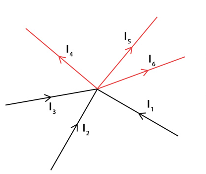
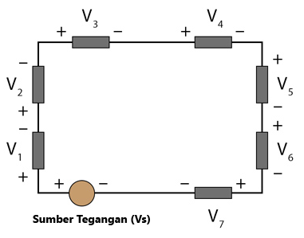
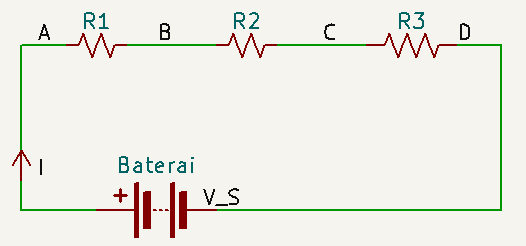
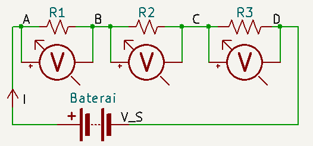
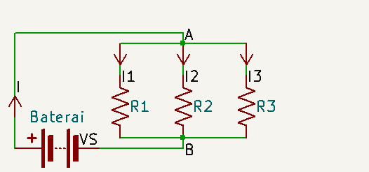
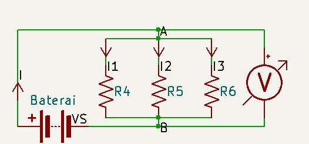
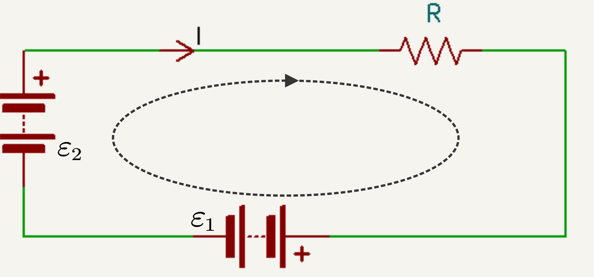
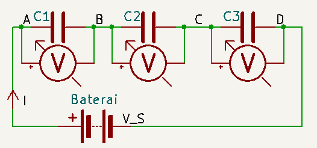
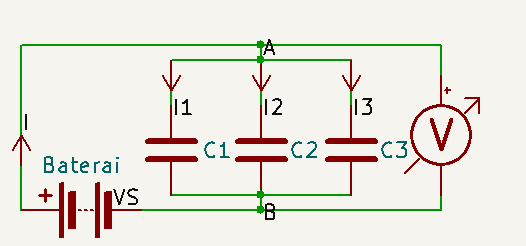

## Listrik Dinamis: Rangkaian Listrik Arus Searah --- ### Listrik Dinamis: - Listrik dinamis mempelajari tentang muatan-muatan listrik bergerak, yang menyebabkan munculnya arus listrik. - Contoh penerapan listrik dinamis banyak dijumpai dalam kehidupan sehari-hari. - Alat-alat elektronik yang biasa kita gunakan, misalnya radio, televisi, komputer, laptop, dll. merupakan penerapan dari listrik dinamis. --- ### Arus Listrik <a class="tooltip"><b>Arus listrik </b><span class="tooltiptext-t-4">Ketika konduktor dihubungkan dengan sumber listrik, muatan di dalamnya mengalami gaya listrik</span></a> adalah **muatan listrik positif** yang melalui kawat penghantar (konduktor) dari potensial listrik **tinggi** ke potensial listrik **rendah** dalam rangkaian **tertutup**. - Arah arus listrik **searah dengan aliran muatan listrik positif** (arus konvensional), berlawanan dengan arah aliran muatan listrik negatif (elektron). --- ### Arus Listrik - **Potensial listrik** disebut juga tegangan listrik. Arus listrik bisa mengalir jika ada beda potensial listrik pada rangkaian tersebut. Beda potensial dihasilkan dari sumber tegangan listrik, misal baterai. Sumber tegangan listrik mempunyai dua kutub, yaitu kutub positif (+) dan kutub negatif (-). Arus listrik mengalir dari potensial listrik tinggi ke potensial listrik rendah. - **Rangkaian tertutup** = suatu rangkaian yang jalannya dimulai dari suatu titik dan akhirnya kembali lagi ke titik tersebut tanpa terputus. --- ### Arus Listrik Besarnya arus listrik disebut dengan **kuat arus listrik**, yang didefinisikan sebagai **banyaknya muatan listrik** yang mengalir melalui suatu penampang **tiap detik**. ###### `$$I=\frac Q t$$` - *I* = kuat arus listrik (A) - *Q* = muatan listrik (C) - *t* = waktu (s) --- ### Hukum Ohm *arus listrik yang mengalir melalui sebuah penghantar berbanding lurus dengan beda potensial (V)* `$$V\backsim I$$` ###### `$$V=IR$$` Keterangan: - *V* = beda potensial/tegangan listrik (Volt) - *R* = hambatan (Ohm atau Ω) --- ### Hambatan Listrik - Setiap bahan, baik itu logam maupun non logam mempunyai hambatan tertentu. Perbedaan hambatan pada masing-masing bahan disebut dengan **hambatan jenis**. - Hambatan atau resistansi berguna untuk mengatur besarnya kuat arus listrik yang mengalir melalui suatu rangkaian listrik. - Alat yang digunakan sebagai hambatan listrik pada suatu rangkaian adalah resistor, dengan simbol atau --- ### Hambat Jenis - Hambatan suatu penghantar dipengaruhi oleh: hambat jenis penghantar, panjang penghantar, dan luas penampang penghantar. ###### `$$R=\rho \frac L A$$` - *ρ* = hambat jenis (Ωm) - *L* = panjang penghantar (m) - *A* = Luas penampang penghantar (m<sup>2</sup>) --- ### Hukum Kirchoff #### Hukum I Kirchoff *"jumlah kuat arus yang masuk ke suatu titik cabang sama dengan jumlah kuat arus yang keluar dari titik cabang tersebut"*  --- #### Hukum I Kirchoff (Kaidah Arus) `$$\Sigma I=0$$` `$$\Sigma I_{masuk}-\Sigma I_{keluar}=0$$` ###### `$$\Sigma I_{masuk}=\Sigma I_{keluar}$$` `$$I_1+I_2+I_3=I_4+I_5+I_6$$` --- #### Hukum II Kirchoff *"pada rangkaian listrik tertutup (loop), jumlah aljabar gaya gerak listrik (Σℰ) dan penurunan tegangan (ΣV atau ΣIR) sama dengan nol"*  --- #### Hukum II Kirchoff (Kaidah Tegangan) `$$\Sigma V=0$$` `$$\Sigma\mathcal{E}-\Sigma IR=0$$` ###### `$$\Sigma\mathcal{E}=\Sigma IR$$` `$$V_S=V_1+V_2+V_3+V_4+V_5+V_6+V_7$$` --- ### Rangkaian Seri Resistor - Rangkaian seri adalah rangkaian **tanpa percabangan**. Karenanya hanya ada satu jalur arus.  `$$I=I_1=I_2=I_3$$` --- #### Rangkaian Seri Resistor  `$$\Sigma\mathcal{E}=\Sigma V\implies V_S=V_1+V_2+V_3$$` `$$V_{DA}=V_{BA}+V_{CB}+V_{DC}$$` --- #### Rangkaian Seri Resistor `$$IR_{DA}=IR_{BA}+IR_{CB}+IR_{DC}$$` `$$R_{DA}=R_{BA}+R_{CB}+R_{DC}$$` ###### `$$R_{S}=R_{1}+R_{2}+R_{3}$$` - *R<sub>S</sub>* = Hambatan pengganti seri --- ### Rangkaian Paralel Resistor - Rangkaian paralel adalah rangkaian **dengan percabangan**. Dalam rangkaian di bawah akan terdapat 4 jalur arus.  `$$I=I_1+I_2+I_3$$` --- #### Rangkaian Paralel Resistor  `$$\Sigma\mathcal{E}=\Sigma V\implies V_S=V_{BA}$$` `$$V_{BA}=V_{1}=V_{2}=V_{3}$$` --- #### Rangkaian Paralel Resistor `$$I=I_1+I_2+I_3$$` `$$\frac {V_S}{R_P}=\frac {V_1}{R_1}+\frac {V_2}{R_2}+\frac {V_3}{R_3}$$` ###### `$$\frac {1}{R_P}=\frac {1}{R_1}+\frac {1}{R_2}+\frac {1}{R_3}$$` - *R<sub>P</sub>* = Hambatan pengganti paralel --- #### Penggunaan Hukum Kirchoff dalam penyelesaian soal menggunakan loop  --- - Tentukan arah loop terlebih dahulu. Pada dasarnya, pemilihan arah loop bebas. Untuk lebih mudahnya, diusahakan arah loop searah dengan arah arus. --- - Jika pada suatu cabang, arah loop searah dengan arah arus maka kuat arus bertanda positif, sedangkan jika ara loop berlawanan arah dengan arah arus maka kuat arus bertanda negatif. - Jika saat mengikuti arah loop, dijumpai dahulu kutub positif sumber tegangan maka GGL bertanda positif. Sebaliknya, jika dijumpai kutub negatif sumber tegangan maka GGL bertanda negatif. --- `$$\Sigma\mathcal{E}=\Sigma IR$$` `$$-\mathcal{E}_1+\mathcal{E}_2=IR$$` --- Langkah-langkah dalam menyelesaikan rangkaian dua loop atau lebih: 1. Gambarlah rangkaian listrik majemuk tersebut. 2. Tetapkan arah kuat arus untuk setiap cabang, 3. Tulislah persamaan-persamaan arus untuk tiap titik cabang menggunakan Hukum I Kirchoff 1. Tetapkan loop beserta arahnya pada setiap rangkaian tertutup. --- 5. Tulislah persamaan-persamaan untuk setiap loop menggunakan Hukum II Kirchoff 6. Hitung besaran-besaran yang ditanyakan menggunakan persamaan-persamaan pada langkah 5. --- ### Gaya Gerak Listrik (GGL) dan Tegangan Jepit - **GGL** (*ε*) adalah beda potensial antara kedua kutub baterai, sebelum baterai mengalirkan arus listrik (*I=0*). - **Tegangan jepit** (*V<sub>jepit</sub>*) adalah beda potensial antara kedua kutub baterai ketika baterai mengalirkan arus listrik (*I≠0*) --- - Ketika baterai dengan GGL (ε) mengalirkan arus listrik pada rangkaian maka terjadi penurunan tegangan di dalam baterai yang nilainya *Ir*. Penurunan tegangan ini disebabkan oleh hambatan dalam *r* pada baterai tersebut. - Persamaan Tegangan Jepit: ###### `$$V_{jepit}=\mathcal{E}-Ir=IR$$` --- Contoh: Sebuah batu baterai AAA sebelum digunakan, jika diukur menggunakan voltmeter, tegangan antara kutub positif (+) dan kutub negatif (-) adalah 1,5 volt, maka nilai inilah yang disebut ggl (ε). Pada saat baterai sedang digunakan untuk menyalakan lampu, jika diukur menggunakan voltmeter, ternyata tegangan antara kutub positif (+) dan kutub negatif (-) adalah 1,2 volt, nilai inilah yang disebut tegangan jepit. Dari persamaan di atas, dapat ditentukan kuat arus listrik yang mengalir dalam rangkaian tertutup sederhana, yaitu: --- `$$V_{jepit}=\mathcal{E}-Ir=IR$$` `$$\mathcal{E}=Ir+IR=I(R+r)$$` Sehingga ###### `$$I=\frac{\mathcal{E}}{R+r}$$` ###### `$$I=\frac{V_{jepit}}{R}$$` --- - *V<sub>jepit</sub>* = tegangan jepit (V) - *ℰ* = GGL baterai (V) - *R* = hambatan luar (ohm) - *r* = hambatan dalam (ohm) --- ### Energi dan Daya Listrik #### Energi Listrik - **Energi listrik** adalah energi yang disebabkan oleh muatan listrik yang mengalir karena adanya beda potensial dalam suatu rangkaian listrik tertutup. - Besarnya energi listrik (W) yang mengalir pada sebuah penghantar dapat dirumuskan sebagai berikut: ###### `$$W=VIt=I^2Rt=\frac{V^2}{R}t$$` --- - *W* = energi listrik (Joule) - *V* = beda potensial/GGL/tegangan (volt) - *I* = arus listrik (Ampere) - *t* = waktu (s) --- #### Daya Listrik - **Daya listrik** adalah besarnya energi tiap satuan waktu. ###### `$$P=\frac{W}{t}=VI=I^2R=\frac{V^2}{R}$$` - *P* = energi listrik (Watt) - 1 watt = 1 Volt Ampere = 1 Joule/sekon --- ### Kapasitor dan Dielektrik - **Kapasitor** adalah salah satu komponen elektronika yang berfungsi untuk menyimpan muatan. Simbolnya - Kemampuan kapasitor untuk menyimpan muatan listrik disebut **kapasitas/kapasitans** ###### `$$C=\frac{Q}{V}$$` - *C* = kapasitans (Farad = coulomb/volt) --- #### Kapasitor dan Dielektrik - Kapasitor adalah dua keping sejajar yang dipisahkan oleh medium. Maka, sesuai hukum Gauss, perbedaan potensial di antara kedua keping: ###### `$$V=Ed$$` - *V* = beda potensial (V) - *E* = Kuat medan Listrik (Wb) - *d* = jarak antar keping (m) --- #### Kapasitor dan Dielektrik - Jika rapat muatan di setiap keping adalah 𝜎, maka E dapat ditulis sebagai: `$$E=\frac {\sigma}{\varepsilon_0}=\frac {Q}{\varepsilon_0 A}$$` `$$V=Ed$$` `$$\frac{Q}{C}=\frac {Q}{\varepsilon_0 A}d$$` --- ###### `$$C=\frac {\varepsilon_0 A}{d}$$` - *C* = kapasitans (Farad = coulomb/volt) - *A* = Luas keping (m<sup>2</sup>) - *d* = jarak antar keping (m) - *ε<sub>0</sub>* = permitivitas vakum --- ### Rangkaian Seri Kapasitor  `$$I=I_1=I_2=I_3$$` `$$Q=Q_1=Q_2=Q_3$$` --- #### Rangkaian Seri Kapasitor `$$\Sigma\mathcal{E}=\Sigma V\implies V_S=V_1+V_2+V_3$$` `$$V_{DA}=V_{BA}+V_{CB}+V_{DC}$$` --- #### Rangkaian Seri Kapasitor `$$\frac{Q_T}{C_S}=\frac{Q_1}{C_1}+\frac{Q_2}{C_2}+\frac{Q_3}{C_3}$$` ###### `$$\frac{1}{C_S}=\frac{1}{C_1}+\frac{1}{C_2}+\frac{1}{C_3}$$` - *C<sub>S</sub>* = Kapasitor pengganti seri --- ### Rangkaian Paralel Kapasitor  `$$I=I_1+I_2+I_3$$` `$$Q=Q_1+Q_2+Q_3$$` --- #### Rangkaian Paralel Kapasitor `$$\Sigma\mathcal{E}=\Sigma V\implies V_S=V_{BA}$$` `$$V_{BA}=V_{1}=V_{2}=V_{3}$$` --- #### Rangkaian Paralel Kapasitor `$$Q=Q_1+Q_2+Q_3$$` `$$C_PV_T=C_1V_1+C_2V_2+C_3V_3$$` ###### `$$C_P=C_1+C_2+C_3$$` - *C<sub>P</sub>* = Kapasitor pengganti paralel --- ### Energi Listrik dalam Kapasitor - **Energi listrik** adalah Usaha yang disebabkan oleh muatan listrik yang mengalir karena adanya beda potensial dalam suatu rangkaian listrik tertutup. - Besarnya energi listrik (W) yang mengalir pada sebuah kapasitor dapat dirumuskan sebagai berikut: ###### `$$dW=VdQ$$` --- `$$\begin{split}W=\int dW&=\displaystyle\int_{0}^Q VdQ\\&=\displaystyle\int_{0}^Q \frac{Q}{C}dQ\\&=\frac 1 2 \frac{Q^2}C\displaystyle\bigg\vert_{0}^Q \end{split}$$` ###### `$$W=\frac 1 2 \frac{Q^2}C=\frac 1 2 V^2C=\frac 1 2 QV$$`